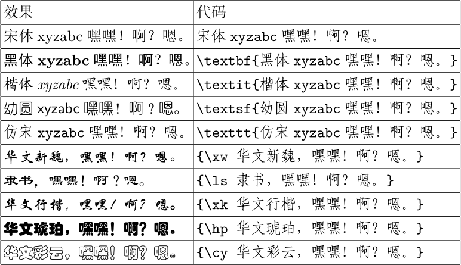

又新装了几个字体
现在的列表是
STCaiyun,华文彩云:style=Regular
YouYuan,幼圆:style=Regular
STHupo,华文琥珀:style=Regular
KaiTi_GB2312,楷体_GB2312:style=Regular
NSimSun,新宋体:style=Regular
FangSong_GB2312,仿宋_GB2312:style=Regular
SimSun,宋体:style=Regular
STXinwei,华文新魏:style=Regular
SimHei,黑体:style=Regular
STXingkai,华文行楷:style=Regular
LiSu,隶书:style=Regular

(150.73 KB)
2012-3-24 13:04
\setCJKfamilyfont{hwxw}{STXinwei}
\newcommand\xw{\CJKfamily{hwxw}}
\setCJKfamilyfont{lisu}{LiSu}
\newcommand\ls{\CJKfamily{lisu}}
\setCJKfamilyfont{hwxk}{STXingkai}
\newcommand\xk{\CJKfamily{hwxk}}
\setCJKfamilyfont{hwhp}{STHupo}
\newcommand\hp{\CJKfamily{hwhp}}
\setCJKfamilyfont{hwcy}{STCaiyun}
\newcommand\cy{\CJKfamily{hwcy}}
|
 发表于 2012-3-19 18:39
发表于 2012-3-19 18:39